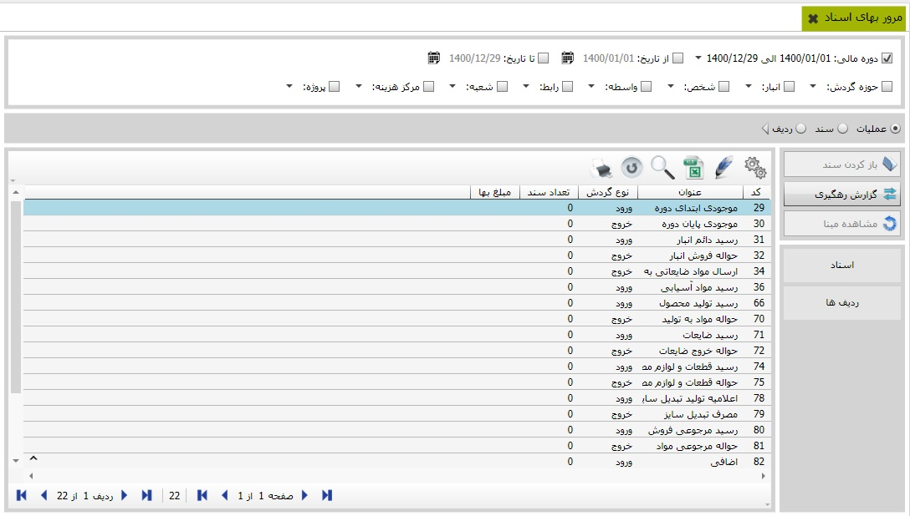

برای «مرور بهای اسناد» تنها کافیست از منوی اصلی نرم افزار آن را کلیک کنید. همانطور که در تصویر ذیل مشاهده می کنید، امکان مشاهده اسناد بر اساس دوره مالی، حوزه گردش و سایر موارد قابل مشاهده در فرم قابل اجرا می باشد.
علاوه بر آن امکان اجرا و مشاهده اسناد، بر اساس گزارش رهگیری، مشاهده مبنا، اسناد و ردیف ها نیز پیاده ساز ی و مهیا گردیده است.